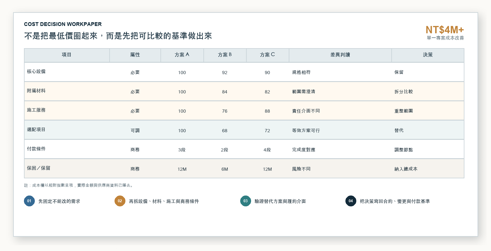
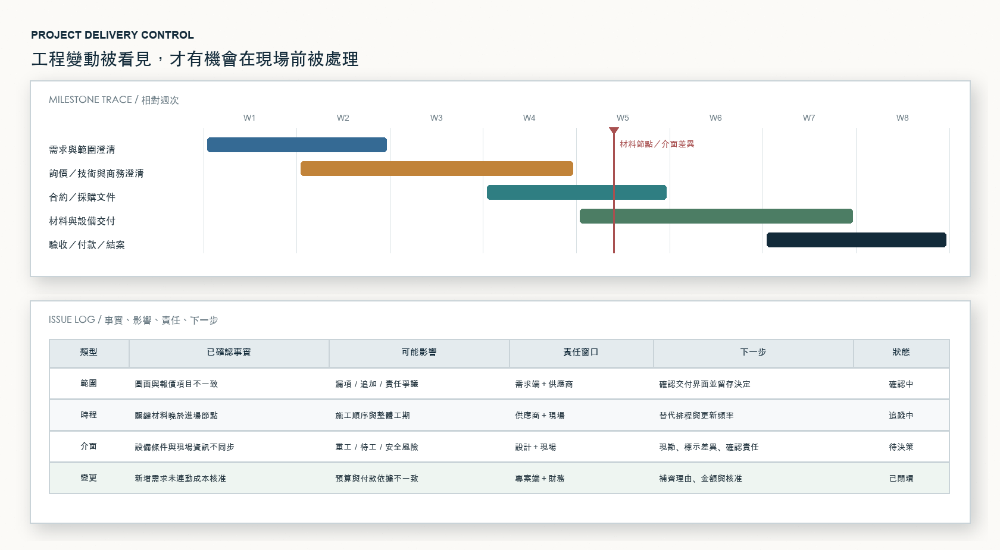
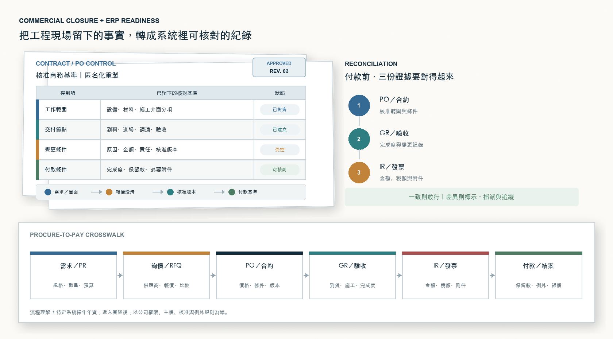

Project control
整理 WBS、Milestone、Dependency，追蹤 Issue 至關閉
LITEON APPLICATION PORTFOLIO · PROCUREMENT × PROJECT MANAGEMENT
我的工作涵蓋工程、設備採購與跨場域專案。實際處理的內容包括確認需求、比較成本與條件、追蹤供應商交期、協調現場問題，以及檢核驗收與請款資料。
LITEON · ROLE FIT
光寶目前公開職缺包含 Strategic Procurement、Strategic Sourcer 與 Project Manager。我的相關經驗集中在工程採購、供應商協調、進度追蹤、成本檢核與交付管理。
整理 WBS、Milestone、Dependency，追蹤 Issue 至關閉
成本拆解、供應商比較、談判與履約條件
確認工程、現場、供應商、財務與主管所需資訊
合約、驗收、請款與結案證據一致
PROJECT LIFECYCLE & DEPENDENCY
橘色標示是我實際負責確認、判斷或追蹤的位置；箭頭表示前後置工作與資訊關係。
WORK RECORD + ACTION + RESULT
以下畫面依實際工作內容匿名化重建，分別說明我如何整理資料、做出判斷、跟進未完成事項，以及確認結果。
Cost & supplier comparison

將設備、材料、施工與服務拆成可比較基準；同步檢視付款、工期、保固與責任。
Milestone & issue control

辨識前後置依賴與下游影響，將差異轉成 Owner、期限、決策與升級事項。
PO / GR / IR reconciliation

核對合約承諾、實際完成、驗收證據與請款內容，保留完整追溯軌跡。
CROSS-FUNCTIONAL COORDINATION
我會彙整需求、圖面、報價與現場狀況，確認目前版本、負責人與期限；若差異影響成本、工期或驗收，再整理成主管需要判斷的事項。
INPUT
需求・圖面・報價
ALIGN
版本・責任・期限
DECIDE
差異・風險・取捨
ACT
Owner・下一步
VERIFY
驗收・付款・關閉
AMBER CHANG · PROJECT × PROCUREMENT